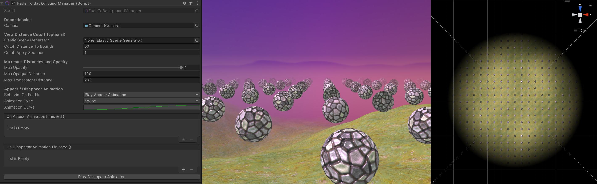

Fade-To-Background Shaders (Built-In Render Pipeline)
This support package comes with a set of shaders that fade objects into the skybox instead of a solid color fog. It is particularly useful to conceal popup effects in the distance. In contrast to real transparency, the performance impact is negligible.
Tip
This package comes with a sample scene you can install from the Unity Package Manager.

The following setup steps are required to apply the Fade-To-Background technique to your scene:
- Use Fade-To-Background material shaders for all objects that should fade in the distance.
- Either by replacing all shaders on existing materials by Fade-To-Background shaders,
- or by creating new materials based on the provided Fade-To-Background shaders.
- Apply the
FadeToBackground/Skybox|Cubemapshader to the scene's background material. - Add the FadeToBackgroundManager component to the scene and provide the main camera as a dependency.
Important
Using the FadeToBackground/Skybox|Cubemap shader can cause smearing artifacts if no FadeToBackgroundManager has been attached to the scene.
Setting up the Fade-To-Background Manager
Dependencies
| Parameter | Type | Description |
|---|---|---|
| Camera | Camera | The camera to draw the fading materials. |
View Distance Cutoff (optional)
The FadeToBackgroundManager provides the option to cutoff the view distance adaptively depending on the generated content. The bounds of a given Elastic Scene Generator (and the camera position within) determine the maximum allowed view distance.
Note
Leave the ElasticSceneGenerator field empty if you don't want to use the View Distance Cutoff feature.
| Parameter | Type | Description |
|---|---|---|
| ElasticSceneGenerator | ElasticSceneGenerator | The ElasticSceneGenerator to cutoff the maximum view distance depending on its bounds. Leave empty to disable cutoff. |
| CutoffDistanceToBounds | float | The cutoff distance to the bounds of the ElasticSceneGenerator. |
| CutoffApplySeconds | float | The time in seconds it takes to apply new bounds after an ElasticSceneGenerator update. |
Maximum Distances and Opacity
The fading gradient can be determined and adjusted at runtime using the following parameters:
| Parameter | Type | Description |
|---|---|---|
| MaxOpacity | float | The maximum opacity of all FadeToBackground materials. |
| MaxOpaqueDistance | float | The maximum distance at which FadeToBackground materials start fading out. |
| MaxTransparentDistance | float | The maximum distance at which FadeToBackground materials lose sight. |
Appear / Disappear Animation
In order to let the scene appear or disappear in a smooth way, an animation can be applied and triggered by calling the PlayAppearAnimation() and PlayDisappearAnimation() functions or by pressing the corresponding button.
| Parameter | Type | Description |
|---|---|---|
| BehaviorOnEnable | BehaviorOnEnable | The behavior on every OnEnable call when the FadeToBackgroundManager gets active. |
| AnimationType | AnimationType | The kind of animation to reveal or hide all FadeToBackground materials. |
| AnimationCurve | AnimationCurve | Maps the current animation time to a ratio of the fadeout effect. While the time can be scaled at will, values are clamped between 0 and 1 when evaluated. |
| OnAppearAnimationFinished | UnityEvent | Gets invoked when the appear animation ends. |
| OnDisappearAnimationFinished | UnityEvent | Gets invoked when the disappear animation ends. |
Note
Since the AnimationCurve values are clamped between 0 and 1, the keyframes should begin with a value of 0 and end with a value of 1 to get the expected result.
The following behaviors on enabling the FadeToBackgroundManager component can be selected:
| BehaviorOnEnable | Description |
|---|---|
| PlayAppearAnimation | Plays the appear animation to reveal all FadeToBackground materials. |
| Invisible | FadeToBackground materials are invisible and are revealed when the PlayAppearAnimation() function is called. |
| Visible | FadeToBackground materials are visible. |
| AppearAfterElasticSceneGenerationFinished | Plays the appear animation after the ElasticSceneGenerator has finished its generation process. |
The following animations can be chosen from:
| AnimationType | Description |
|---|---|
| Swipe | The render distance starts narrow and gets wider. |
| Fade | The render opacity starts transparent and gets more opaque. |